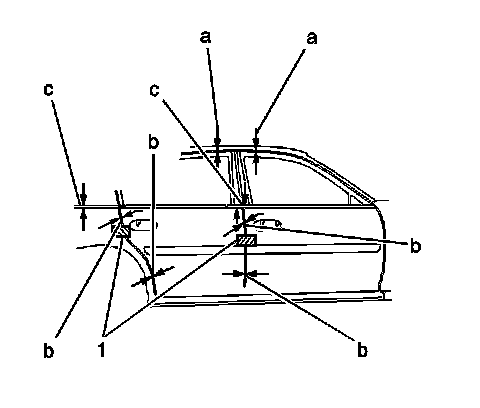

Front Door: Adjustments
Door Adjustment

1. Loosen the door hinge to pillar bolts. This will allow adjustment of the door at the hinge pillar in the following directions:
* Up or down (c), 0.0-2.0 mm (0.0 - 0.08 in) upwards, 1 mm (0.04 in) upwards preferred.
* Fore or aft (b), 3 - 5 mm (0.12 - 0.20 in) equal gap, 4 mm (0.16 in) preferred.
2. Reposition the door as needed.
Notice: Refer to Fastener Notice (Fastener Notice) .
3. Position the door fore or aft at the hinge pillar attachment. Perform the following steps as needed:
1. Loosen the bolts.
2. Reposition the door.
3. Tighten the bolts.
Tighten the bolts to 25 N.m (18 lb ft).
4. Verify the doors are flush to within 1 mm (0.04 in), with a flushing magnet (1) located in the striker area below the beltline.
5. If in or out adjustment is needed, remove the door hinge. Refer to Front Side Door Hinge Replacement (Service and Repair) or Rear Side Door Hinge Replacement (Service and Repair) .
6. Drill the door side of the hinge holes with a 13 mm (0.5 in) drill bit in order to allow for 2.5 mm (0.10 in) in or out adjustment.
7. Use replacement bolts, GM P/N 11519454 on the door side of the hinge.
8. Leave the bolts on the door side of the hinge loose.
9. Align the front door to the front fender first, if needed.
10. Position the door in or out. Perform the following steps as needed:
1. Loosen the bolts.
2. Reposition the door.
3. Tighten the bolts.
Tighten the bolts to 25 N.m (18 lb ft).
11. Align the rear door to the front door and rear quarter, if needed.
12. Position the door in or out. Perform the following steps as needed:
1. Loosen the bolts.
2. Reposition the door.
3. Tighten the bolts.
Tighten the bolts to 25 N.m (18 lb ft).
13. Adjust the seal gap (a) at the door header to 13 - 17 mm (0.52 - 0.68 in), 15 mm (0.60 in) preferred, by placing knee near the beltline and pulling inward or pushing outward.
14. Verify door header to door header at the center pillar is flush to within 1 mm (0.04 in). Adjust the door headers if necessary.
15. Verify all door gaps are within specifications.
16. Adjust the lock striker. Refer to Door Lock Striker Adjustment (Adjustments) .